مقدّم إلى مجلس إدارة مستودع معتوق · تشرين الأول 2026
فينيق منصة تربط مستودعات الأدوية بالصيدليات. الصيدلية تبحث عن الصنف وتطلبه من تطبيق على الموبايل،
والمستودع يستلم الطلبية مكتوبة ومرتّبة على لوحة تحكم من أي لابتوب، بلا مكالمات ولا تدوين.
لا يستبدل طريقة عملكم ولا مندوبيكم: هو قناة بيع إضافية إلى جانبها.
ماذا يربح مستودع معتوق؟
صيدليات أكثر تطلب منكم في أي وقت، لا فقط في جولات المندوبين وساعات الهاتف.
طلبيات مكتوبة كما أرادتها الصيدلية: أخطاء أقل بالأصناف والكميات.
الطلبيات والمرتجعات وأرصدة الصيدليات في مكان واحد.
ما الجاهز اليوم؟
تطبيق الصيدليات (Android) ولوحة تحكم المستودع يعملان الآن.
أصناف يونيفارما كلها من قائمة وزارة الصحة جاهزة للرفع، و183 منها بصورة العلبة.
رفع بقية الأصناف والأسعار من ملف إكسل يخرج من برنامج المحاسبة.
فريق فينيق يتولى الإعداد ويعرّف الصيدليات بمستودعكم.
289صنفاً ليونيفارما في قائمة وزارة الصحة، محمّلة في نسختنا التجريبية باسم معتوق
5%من قيمة الطلبيات التي تصل عبر فينيق فقط، ومنها 4% حسم يذهب للصيدلية نفسها
60يوماً للتجربة بفرع واحد، ثم يقرر المجلس على بيّنة
القرار
المطلوب من المجلس: الموافقة على تجربة بفرع واحد لمدة 60 يوماً
بلا التزام بعدها. خلال التجربة يحصل معتوق على عرض الشريك المؤسس (الصفحة 4). وفي نهايتها نعرض على المجلس ما حدث فعلاً بالأرقام: كم صيدلية طلبت، وكم طلبية وصلت، وبأي قيمة.
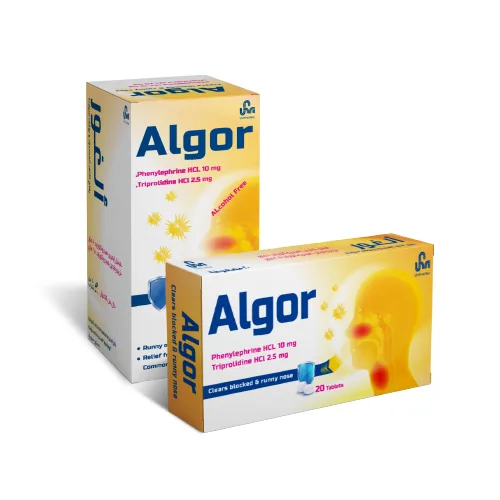
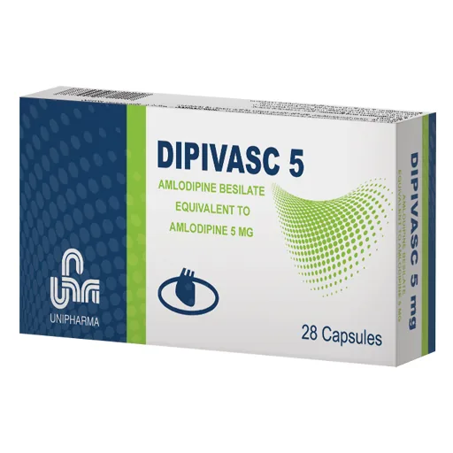
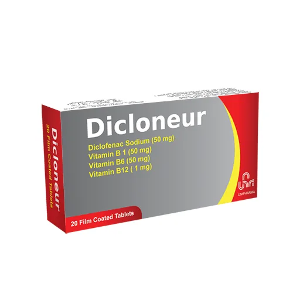
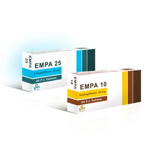
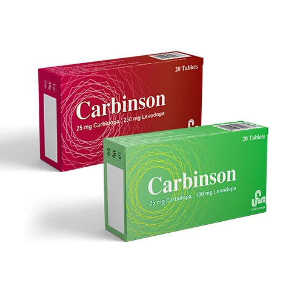
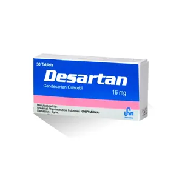
أصناف من يونيفارما محمّلة في نسختنا التجريبية، بصور العلب من موقع الشركة.
اليوم تمر الطلبية بمكالمة أو رسالة واتساب، ثم يدوّنها أحد باليد. مع فينيق تصل مكتوبة وجاهزة للتجهيز:
1الصيدلية تبحث وتطلببأول حروف اسم الصنف، وترى السعر والتوفر والعروض.
2تظهر فوراً على لوحتكممن دون تحديث الصفحة، مصنّفة حسب الحالة.
3تؤكدون وتجهّزونوالصيدلية تتابع الحالة خطوة بخطوة من الموبايل.
4التسليم والدفعالدفع عند التسليم كما اليوم. لا بطاقات ولا دفع إلكتروني.
ما تراه الصيدلية (تطبيق Android)
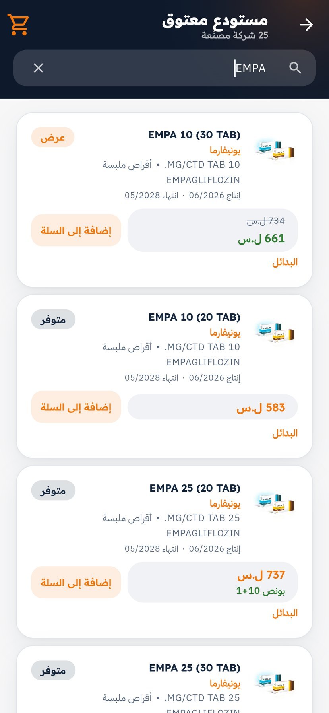
البحث: السعر، العرض، البونص، المادة الفعالة، وتاريخ الصلاحية
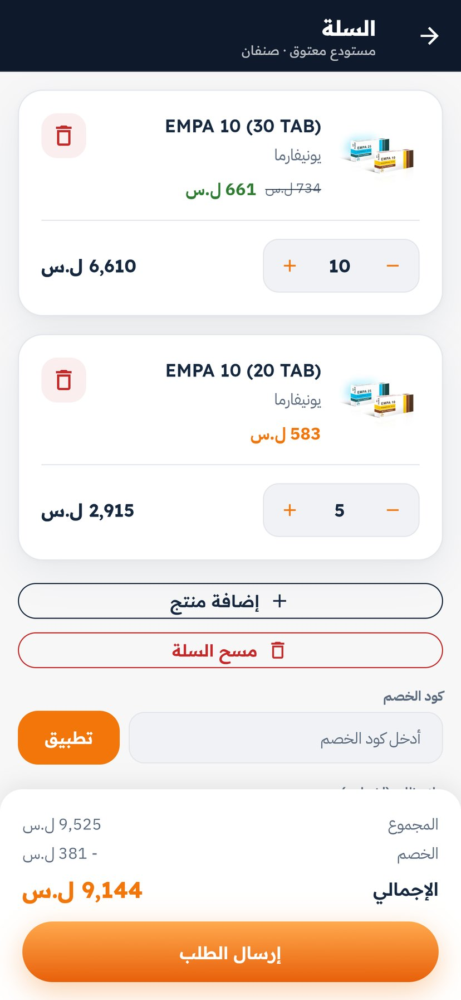
السلة: الكميات، كود الحسم، والإجمالي قبل الإرسال
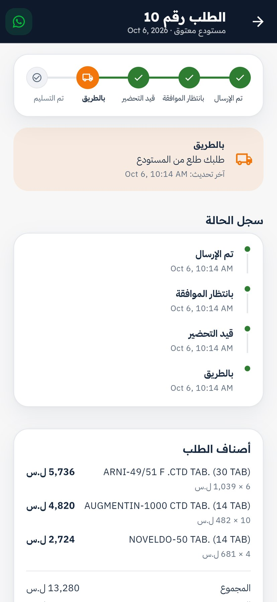
تتبّع الطلبية: من الإرسال حتى التسليم
لقطات حقيقية من التطبيق ولوحة التحكم، من نسخة تجريبية ببيانات توضيحية: أسماء الصيدليات والطلبيات والأسعار ليست حقيقية.
فينيق · ملف مجلس إدارة مستودع معتوق2
لوحة تحكم المستودع
كل طلبيات الصيدليات أمامكم، مرتّبة حسب الحالة
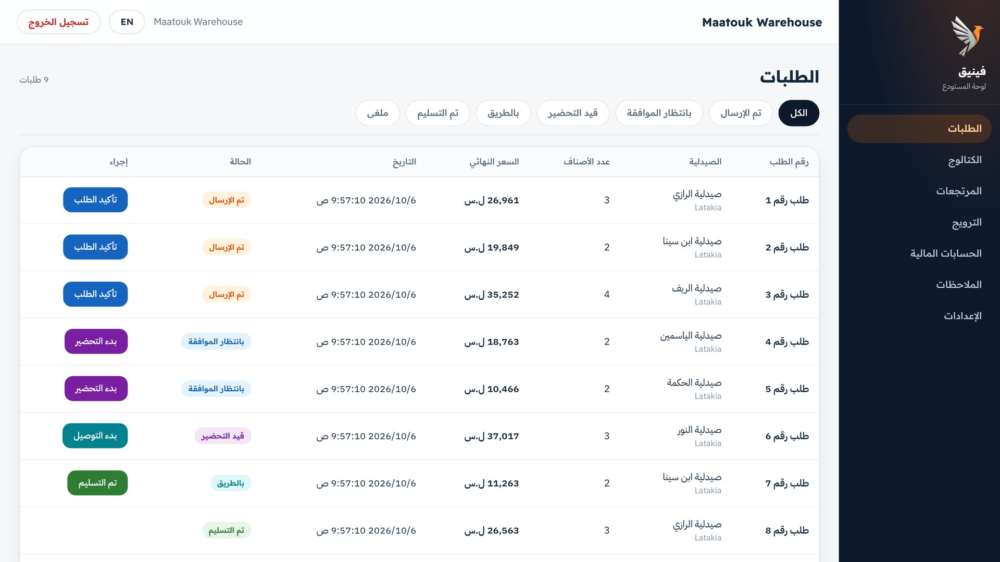
صفحة الطلبات: جديدة، بانتظار الموافقة، قيد التحضير، بالطريق، تم التسليم. زر واحد ينقل الطلبية للمرحلة التالية، والصيدلية ترى الحالة الجديدة في تطبيقها.
أصناف يونيفارما جاهزة قبل أن نبدأ
حمّلنا في نسختنا التجريبية كل أصناف يونيفارما المسجّلة في قائمة وزارة الصحة السورية (289 صنفاً)
بالمادة الفعالة والعيار والشكل الدوائي، و183 منها بصورة العلبة من موقع الشركة، ومعها أصناف معتوق فارما.
تظهر للصيدلية قسماً كاملاً باسم الشركة داخل متجر معتوق، وإذا نفد صنف يقترح التطبيق بديلاً بنفس المادة الفعالة من أصنافكم أنتم.
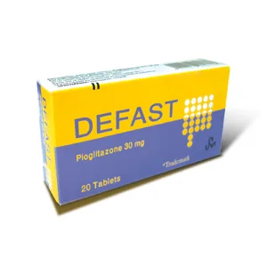
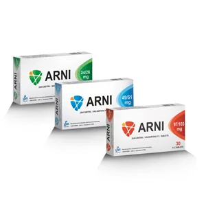
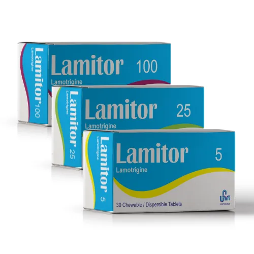
أدوات البيع والترويج في اللوحة
%
عروض لفترة محددةنسبة حسم على صنف، تظهر للصيدليات في قسم العروض.
+1
بونصمثل 10+1 على أي صنف، يُحسب تلقائياً في الطلبية.
3
سلاتمجموعة أصناف بسعر واحد، مثل سلة الضغط والسكري.
#
أكواد حسمكود عام لكل الصيدليات، أو خاص بصيدلية واحدة.
%
حسم على شركة كاملةنسبة ثابتة على كل أصناف شركة مصنّعة، مثل يونيفارما.
▣
بانراتعلى الصفحة الرئيسية للتطبيق لأصناف تختارونها.
فينيق · ملف مجلس إدارة مستودع معتوق3
مقترح الشراكة
تجربة بفرع واحد لمدة 60 يوماً
كيف نبدأ
الأصناف والأسعار: ندخلها مع فريقكم من ملف إكسل، وأصناف يونيفارما جاهزة أصلاً.
التعريف بمستودعكم: فريق فينيق يزور الصيدليات ويشجعها على الطلب منكم.
استقبال الطلبيات: على لوحة التحكم، وتجهّزونها بالطريقة التي نتفق عليها.
متابعة وتطوير: دعم مباشر، ونعدّل حسب ملاحظاتكم.
ما نحتاجه منكم
اختيار الفرع الذي تبدأ به التجربة.
ملف الأصناف والأسعار (إكسل).
شخص من فريقكم مسؤول عن لوحة التحكم.
الاتفاق على طريقة تجهيز الطلبيات وتوصيلها.
الكلفة
5% من قيمة الطلبيات التي تصل عبر فينيق فقط:4% حسم مباشر للصيدلية على طلبيتها منكم (هو ما يشجعها على الطلب عبر التطبيق)،
و1% عمولة فينيق. لا اشتراك ولا رسوم تسجيل، والطلبيات بالهاتف أو عبر المندوب لا يُقتطع منها شيء. مثال:
قيمة الأصناف (بعد العروض)
36,721 ل.س
حسم الصيدلية 4%
−1,469 ل.س
ما تدفعه الصيدلية عند التسليم
35,252 ل.س
عمولة فينيق 1%
−353 ل.س
صافي ما يستلمه المستودع
34,899 ل.س
الأرقام من الطلب رقم 3 في النسخة التجريبية، كما تعرضها لوحة التحكم تحت «ملخص مالي» باسم «خصم المنصة» و«عمولة المنصة». وتُسجَّل العمولة عند تسليم الطلبية.
عرض الشريك المؤسس لمستودع معتوق (خلال الستين يوماً)
بلا عمولة فينيق (الـ1%) طوال فترة التجربة. يبقى حسم الصيدليات لأنه هو ما يجذب الطلبيات إليكم.
بانر لأصنافكم على الصفحة الرئيسية للتطبيق بلا مقابل.
إدخال الكتالوج كاملاً وتدريب فريقكم من فريق فينيق.
بلا أي التزام بعد التجربة: إن قررتم التوقف يُخفى المستودع من التطبيق في اليوم نفسه.
في نهاية التجربة نقدّم للمجلس ما حدث فعلاً: عدد الصيدليات التي طلبت، وعدد الطلبيات وقيمتها. ثم يقرر المجلس: الاستمرار، أو التوسع إلى الفرعين الآخرين، أو التوقف.
فينيق · ملف مجلس إدارة مستودع معتوق4
أسئلة يتوقعها المجلس
أسئلة وأجوبة
هل يحلّ فينيق محلّ مندوبينا أو طريقة عملنا؟
لا. المندوب يكمل عمله في الميدان ويبني العلاقة مع الصيادلة، والتطبيق يأخذ عنه الطلبيات الروتينية المتكررة. والهاتف والواتساب يبقيان كما هما.
من يُدخل الأصناف والأسعار، وكيف تُحدَّث؟
فريق فينيق يدخلها أول مرة من ملف إكسل يخرج من برنامج المحاسبة. بعدها تحدّثون الأسعار والتوفر من اللوحة مباشرة، أو برفع ملف جديد فتتحدث كلها دفعة واحدة، ويُحفظ سجل لكل تغيير سعر.
من يرى أسعارنا؟
الصيدليات المسجّلة داخل التطبيق فقط، كما تصلها اليوم قوائم الأسعار عبر الواتساب والمندوبين. الأسعار غير منشورة على الإنترنت، وحسابات المستودعات الأخرى لا ترى إلا أصنافها وطلبياتها.
كيف نعرف أن طلبية جديدة وصلت؟
تظهر فوراً على لوحة التحكم من دون تحديث الصفحة، في تبويب الطلبات الجديدة، مع اسم الصيدلية ورقمها وزر واتساب للتواصل معها.
كيف يتم الدفع والتحصيل؟
الدفع عند التسليم كما اليوم. لا بطاقات ولا دفع إلكتروني. واللوحة تتابع رصيد كل صيدلية وتسجّل الدفعات، وتصدر فاتورة لكل طلبية مسلّمة.
كم صيدلية تستعمل فينيق اليوم؟
نحن في مرحلة الإطلاق في اللاذقية، ولا نذكر أرقاماً قبل أن تتحقق. ما نلتزم به: فريقنا يزور الصيدليات ويعرّفها بمستودعكم، ومعتوق يكون من أوائل المستودعات الكبيرة على المنصة، فيكون في الواجهة حين تنضم الصيدليات.
ماذا عن فروعنا الثلاثة؟
تبدأ التجربة بفرع واحد تختارونه. اليوم يعمل كل فرع بحساب مستقل بأصنافه وطلبياته. وإدارة الفروع من حساب واحد، مع حسابات منفصلة للموظفين، نجهّزها قبل التوسع إلى الفرعين الآخرين.
ماذا لو نفد صنف؟
توقفون عرضه بضغطة من اللوحة. وعلى كل صنف في التطبيق زر «البدائل» يعرض أصنافاً بنفس المادة الفعالة والعيار من أصنافكم أنتم.
والمرتجعات والشكاوى؟
الصيدلية ترسل طلب إرجاع موثّقاً بالأصناف والكميات من التطبيق، وأنتم توافقون أو ترفضون من اللوحة. والملاحظات والشكاوى في قسم خاص بها.
ماذا لو قررنا التوقف؟
خلال التجربة لا يوجد أي التزام. يُخفى المستودع من التطبيق في اليوم نفسه.
هل نحتاج أجهزة أو برامج خاصة؟
لا. لوحة التحكم تفتح من متصفح أي لابتوب أو كمبيوتر، وتطبيق الصيدلية يعمل على موبايلات Android وينزَّل مباشرة بلا متجر Google Play. نسخة iPhone غير متوفرة حالياً.
فينيق · ملف مجلس إدارة مستودع معتوق5
جرّب بنفسك
جرّبوا فينيق بأنفسكم في 5 دقائق
شخصان: واحد على اللابتوب بدور المستودع، وواحد على موبايل Android بدور الصيدلية.
ثبّتوا ملف التطبيق feniq.apk المرسَل مع هذا الملف. إذا طلب الموبايل السماح بالتثبيت من هذا المصدر، اسمحوا مرة واحدة ثم اضغطوا «تثبيت». بعدها أنشئوا حساب صيدلية تجريبياً برقم أي موبايل واسم «تجربة».
3
أرسلوا طلبية وشاهدوها تصل
من التطبيق ادخلوا «مستودع النجاح»، أضيفوا صنفين إلى السلة واضغطوا «إرسال الطلب». ستظهر الطلبية على اللوحة فوراً. اضغطوا «تأكيد الطلب»، ثم افتحوا «طلباتي» على الموبايل واسحبوا للأسفل لتروا الحالة الجديدة.
الحساب التجريبي عام ببيانات وهمية: «النجاح» و«الشفاء» و«الأمل» أسماء تجريبية وليست مستودعات شريكة.
الخادم التجريبي قد يتأخر حتى دقيقة في أول فتح بعد فترة توقف، فافتحوه قبل الاجتماع بدقيقتين.